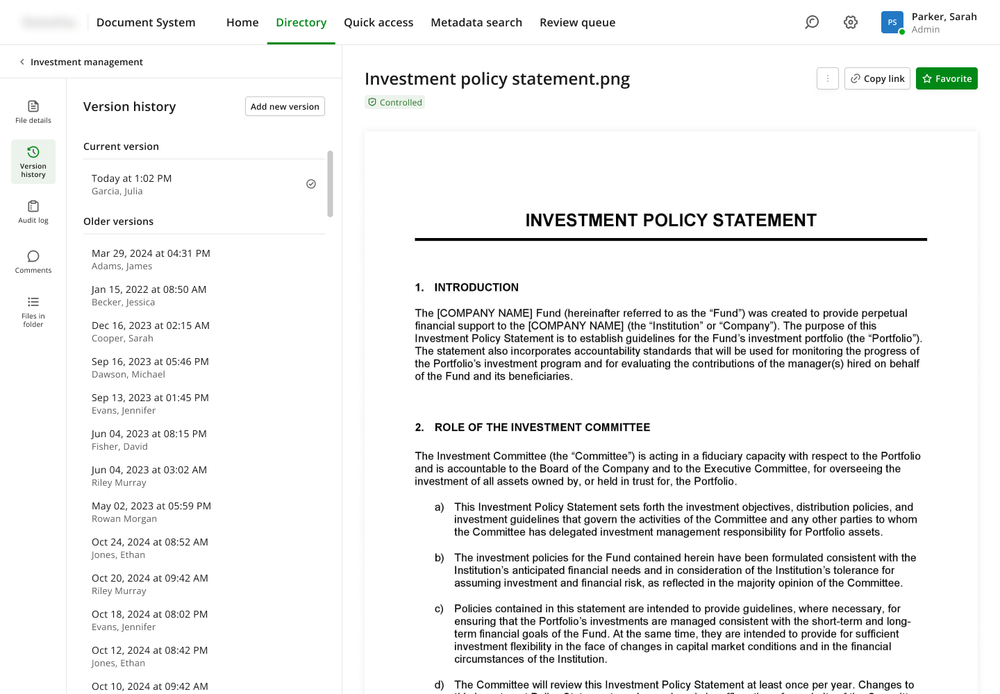
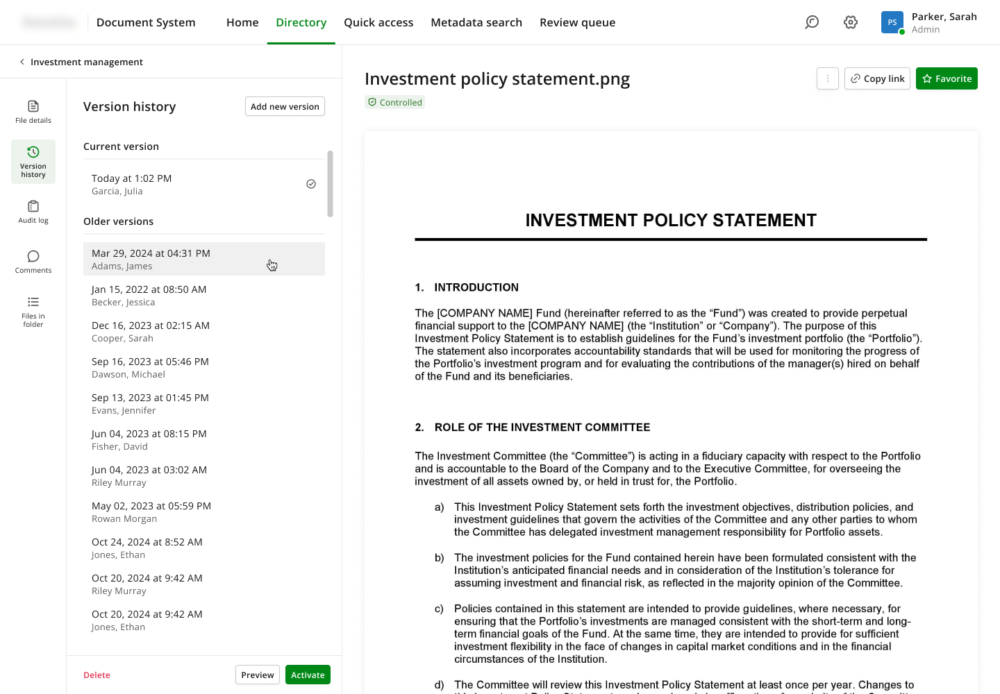
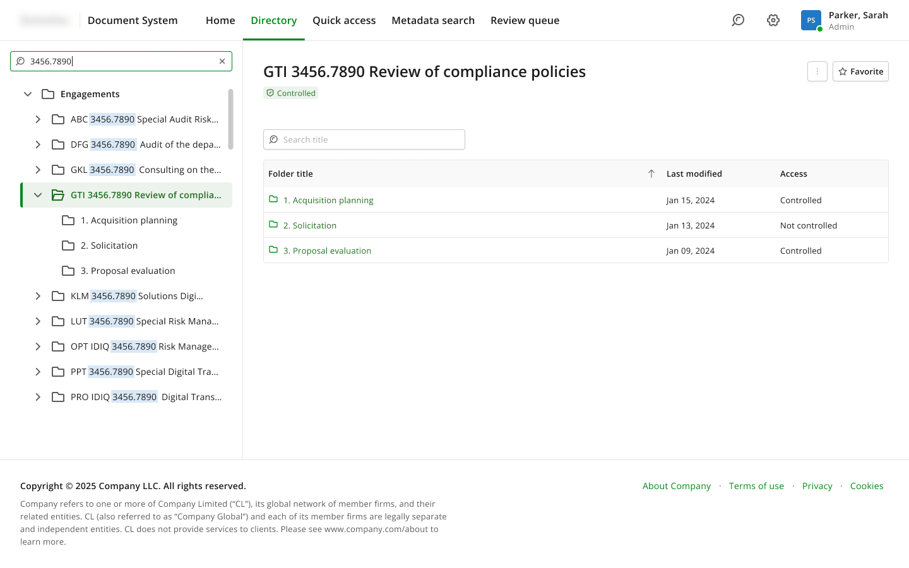
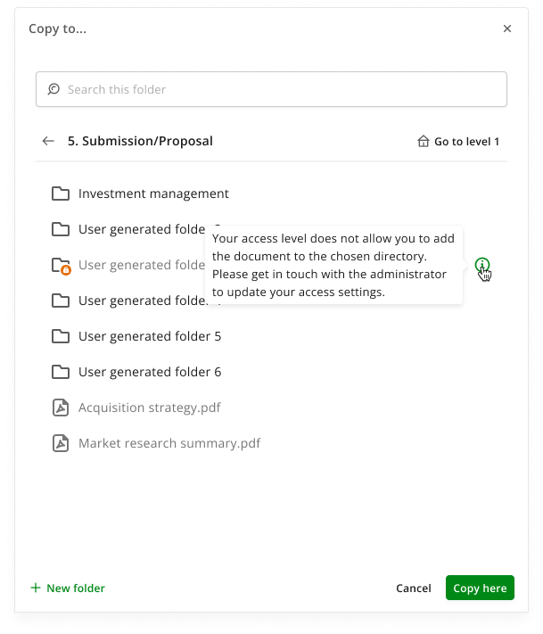
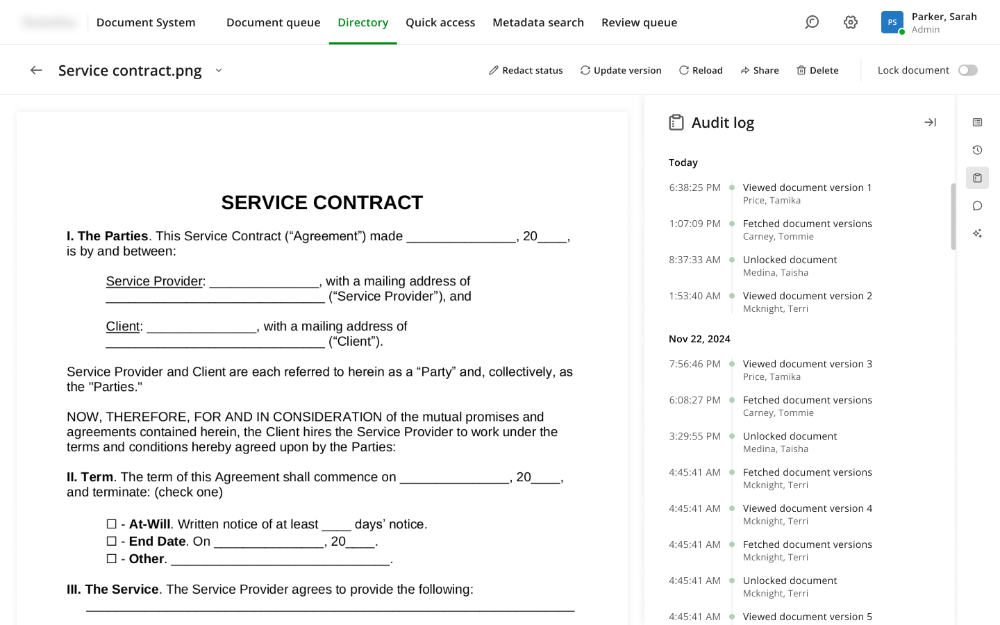
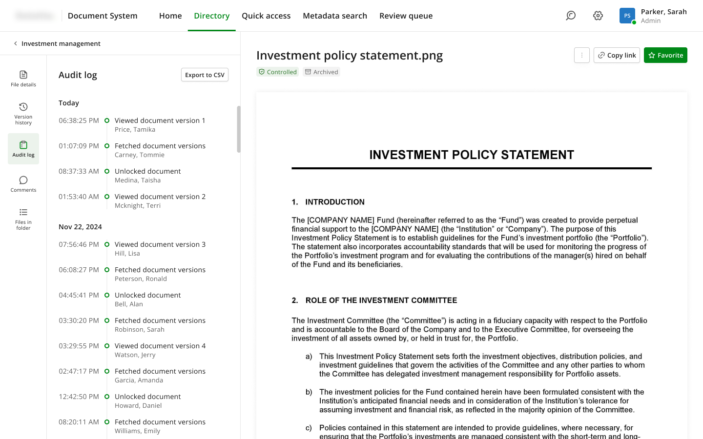
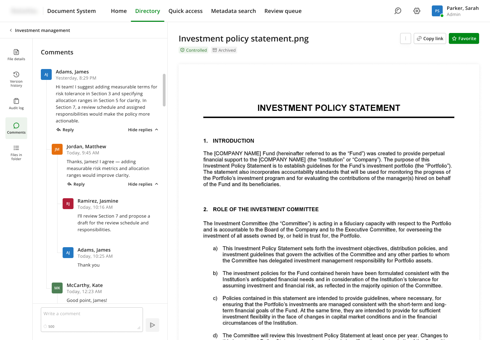
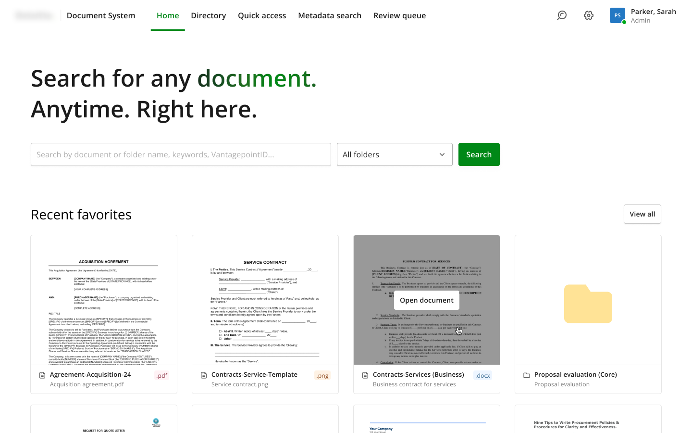
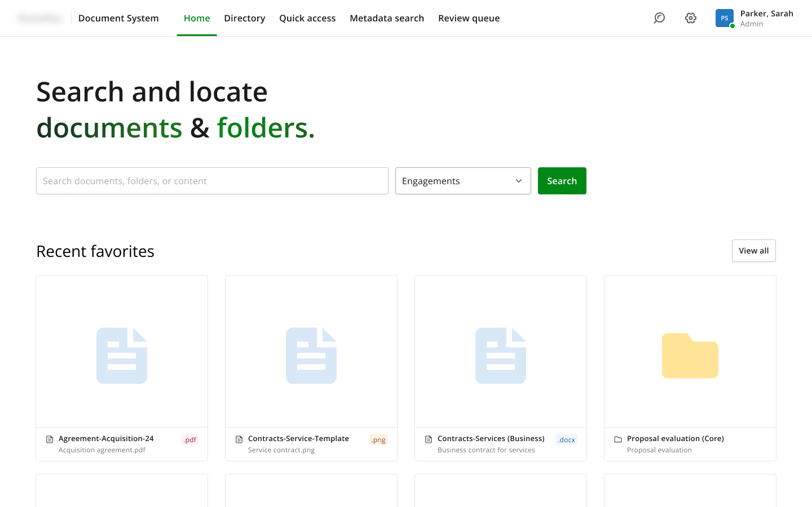

Designing for the cost of a mistake
Secure document management system, enterprise redesign

- Constraint
- Controlled documents, four permission levels, data coming in live from other systems, and users moving from a system they already disliked.
- Decision
- Keep the layout people already knew, with details on the left and the document on the right, and change everything else.
- Trade-off
- A panel with text labels takes more width than a strip of icons, so the document preview is narrower than it could be.
- Role
- Sole designer, working with a project manager
- Timeframe
- About 1 year
- Context
- Replacing an old system for controlled documents, used by teams in different countries
- Outcome
- Everything I designed was approved and built. The first release shipped.
The situation
An organisation kept its controlled documents in an old system. These are documents with strict rules about who can see or change them. Everyone complained about the system, but nobody could avoid using it. My job was to replace it. I was the only designer from the start of the project until the first release, about a year. The brief we got was short: the old system is outdated and hard to use.
What the problem actually was
I went through the old system, its content and its structure, and collected everything users complained about. I found 18 problems. Then my project manager and I checked them with real users in requirement sessions.
When I sorted the problems by how serious they were, the picture changed. The worst ones weren't about the system being hard to use. They were about people damaging important information:
- Deleting caused damage elsewhere. Deleting a document's details also deleted connected data in other systems.
- Wrong document types got through. The system accepted them, which caused classification errors in other systems.
- Updates didn't arrive. Document details didn't refresh reliably, so changes from other systems never showed up.
- Accidents were easy. People moved or deleted things by mistake.
- Controlled documents didn't stand out. In the folder view, you couldn't tell whether a document was controlled. You had to guess from unclear icons or dig into its properties.
- Nobody knew their permissions. Permissions were different from folder to folder, and the interface never told people what they were allowed to do.
- Users couldn't fix their own mistakes. Every fix needed a support ticket.
Put together, it was easy to damage important information in this system without noticing. It was hard to see that it had happened, and impossible to fix without asking someone else.
So my goal wasn't just to modernise the interface. It was to make mistakes less costly: harder to make, easy to notice, and easy to fix by the person who made them.
Five ideas behind the design
Every feature we agreed on with stakeholders supports one of these five ideas:
- Mistakes can be undone. Version history with restore, a recycle bin instead of permanent deletion, a checklist before deleting, and an audit log that records who did what and when, which can be exported.
- Risk is visible. You can see whether a document is controlled on the document itself and on its folder, without opening properties. Documents blocked by security rules or waiting for manual review are flagged. Approval status is shown right away.
- Risky actions are blocked by role. Some roles can't edit system folders. General users can't delete many files at once if they didn't upload them. If you don't have access, you can't open the page at all, so you don't get an error halfway through an action.
- Finding documents doesn't depend on folders. Search in plain language or by keywords, results that show which keywords matched and how often, plus favourites, recent documents and a dashboard.
- The system updates itself. Data from other systems comes in automatically, documents are archived automatically based on their status, and folders are created automatically from record IDs instead of by hand.
There were four user roles: general user, reviewer, review manager and admin. Each had different permissions over documents, reviews and the system itself.



The hard part: the document page
Most of the system used familiar patterns like folders, tables, copy and move. They needed care, but not new ideas.
The document page was different, and it took most of my thinking. It's the one screen where everything has to fit together: the document, its details, its versions, its audit log, comments, the AI assistant and the folder it sits in. People also need to keep track of where they are while using it.
This page is also where two of the five ideas actually reach people. If version history and the audit log aren't easy to find here, they might as well not exist.
The layout decision
In my first version, the document was on the left and the panel on the right, with the panel's sections shrunk to a narrow strip of icons. I rejected it for four reasons.


- Icons alone weren't clear enough. Everyone knows what a trash icon means. Version history, audit log and file details don't have icons like that, so the sections needed labels.
- Users already knew this layout. In the old system, details were on the left and the document was on the right. Keeping that meant people didn't have to relearn where things were while moving to a system they hadn't asked for.
- Reading order. People start reading on the left, so the main work area belongs there.
- They used this pattern every day. These users worked in Microsoft Teams, which has a very similar labelled panel. Using a pattern they already knew meant there was nothing new to learn.
When you redesign a system people already dislike, it helps to keep what they remember and change everything else.
The trade-off: the labelled panel takes more space than a strip of icons, so the document preview is narrower. I chose clarity over preview size, because people open this page to do something with a document, not to read it at full width.
I also reorganised the file details into two columns with a clear order, so the most important information was easy to find.

When the constraints won
For the home tab, I designed a grid of documents and folders showing previews of their content, because people recognise a document by what's inside it much faster than by its file name.
Development came back with two problems. The small animation I designed for the title wasn't possible, so the title became static. And document previews couldn't be shown at all because of a platform limitation.
Instead, we used large icons with the title and file type. It wasn't my first choice, but the reason behind it makes sense: the security rules that make this system valuable are the same ones that made previews impossible.


How the work was validated
Throughout the year, I showed designs to real users and stakeholders several times a week. They reviewed the work, told us whether it fit how they worked, and I changed the designs based on their feedback. That steady feedback is why the work held up.
Everything I designed was approved and went into development. I saw parts of it built before I moved to another project, and my project manager confirmed the rest was built too.
How I'd measure success
The main metric already existed: the number of support tickets about fixing document errors. Users couldn't fix mistakes themselves, so every mistake became a ticket, and the company was already tracking these. That makes it the clearest before-and-after comparison.
- How often people restore files from the bin or roll back versions. This shows how much accidental damage happens, which only became visible once recovery existed.
- How long it takes to find a known document. This is what users would notice most.
- How often people try to do something they don't have access to. This shows where the interface could still be clearer about what people can and can't do.
What I'd focus on next
I'd watch people work in the built system, especially around recovery. Do they find version history when they need it? Do they notice the controlled label before they act? Watching a system meet real daily work shows which decisions were right for the reasons you thought, and that's what I'd want to learn from next.